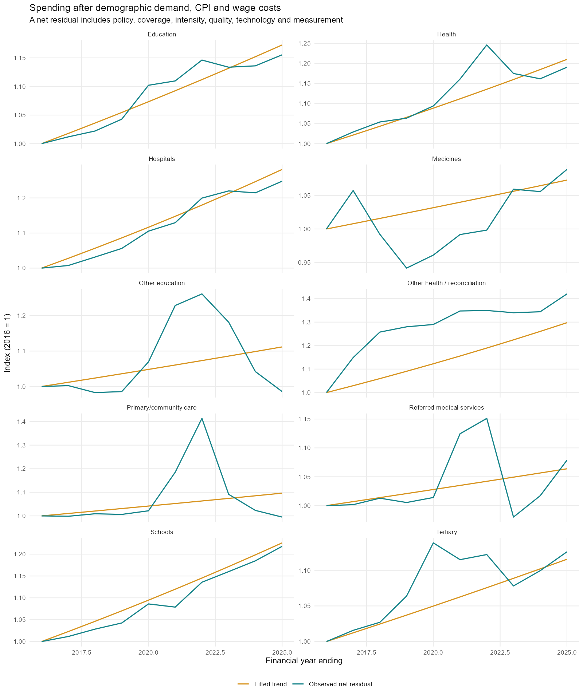
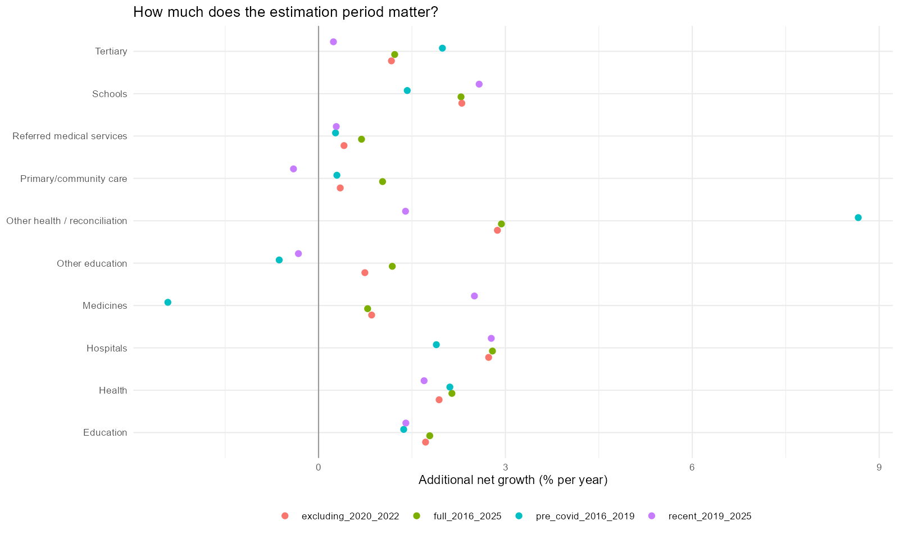

Independent estimation pack | 2026-10-28 | financial years ending 2016-2025
We fit an exponential time trend to spending after removing demographic demand, general inflation and a stated wage-cost basket. The result combines service intensity, quality, coverage, technology, policy, unmodelled wage mix and measurement. It does not identify a separate causal service-productivity effect.
Calculator defaults: the runtime historical alternative uses the 25% productivity specification from the sensitivity output, selected by scripts/prepare_cost_defaults.R. That 25% share is arbitrary, not independently estimated. The zero-efficiency tables below remain a diagnostic specification; paired residuals at 25% are slightly higher. Current calculator cost-growth defaults are also arbitrary choices rather than fitted coefficients. This estimation workflow does not automatically install any set as defaults.
The central specification has zero service-productivity cost savings and uses all-industry hourly WPI. Alternative specifications use sector WPI or compensation per hour and service-productivity growth equal to 25% or 50% of observed aggregate productivity growth. Across ten groups, four time windows, three wage measures and three productivity assumptions, 360 specifications are exported.
Spending_t = demographic demand_t x CPI_t x wage/efficiency basket_t x net residual_t log(net residual_t) = intercept + beta x (year - 2016) + error_t Estimated additional annual growth = exp(beta) - 1
For an input basket, real unit cost is (1 - labour share) + labour share x real hourly wage index / service productivity index. All raw baskets and demographic subfunction weights refer to 2025; final time-series indices are rebased to 2016. General CPI is a deliberate proxy for the model's common domestic price index. Using a health-specific deflator here would remove part of the relative cost pressure we are trying to measure.
Aggregate demand and cost series are sums of subfunction amounts, not averages of growth rates. Ageing changes the mix of their contributions. Main estimates use ten annual levels and nine years of elapsed growth, with calendar time preserved when years are omitted.
| Function | Net residual (%/year) | Descriptive 95% lower | Upper |
|---|---|---|---|
| Health | 2.14 | 1.30 | 2.98 |
| Education | 1.78 | 1.35 | 2.22 |
| Schools | 2.29 | 2.03 | 2.55 |
| Tertiary | 1.22 | 0.56 | 1.89 |
| Other education | 1.18 | -1.48 | 3.91 |
| Hospitals | 2.79 | 2.36 | 3.22 |
| Primary/community care | 1.03 | -1.63 | 3.76 |
| Referred medical services | 0.69 | -0.24 | 1.63 |
| Medicines | 0.79 | -0.41 | 2.00 |
| Other health / reconciliation | 2.94 | 1.05 | 4.85 |
Intervals use a one-lag Newey-West covariance and a small-sample t critical value. With only ten observations they are descriptive fitting diagnostics. They exclude uncertainty about demographics, input shares, policy, measurement and future structural change; they are not forecast uncertainty bands.
Health: four named blocks use AIHW current-dollar government funding from Commonwealth and state/local sources, excluding non-government funders. Hospitals combine public and private hospitals. Primary/community care comprises primary health care excluding benefit-paid pharmaceuticals. Referred medical services and benefit-paid pharmaceuticals are separate. Other health is ABS GFS Health less those four blocks; it includes accounting and classification differences and is not a pure service category. AIHW capital expenditure is not separately added to GFS operating expenses.
Hospital, medical and pharmaceutical demand use the same fixed IGR C12.10 age-cost profiles as the fiscal model, applied to historical ABS single-age populations. Primary/community and referred medical services share the medical profile. The health reconciliation block uses total population. These are age-cost proxies, not service counts: a historical change in morbidity, relative age costs or coverage remains in the residual.
Education: ABS consolidated operating expenses give schools, tertiary and other education. Demand uses ages 5-17 for schools, 18-24 for higher education, 15-64 for VET and total population for other education. A common tertiary residual is supplied to higher education and VET because this GFS history does not split them. Their different demand and cost rules remain. Applying the same residual to them is an explicit allocation assumption. These age proxies omit changes in enrolment, mature-age participation and other composition. Other education includes preschool, making total population a weak demand proxy.
Historical populations use the mean of opening and closing June single-age counts. CPI is the four-quarter financial-year average. Hourly WPI holds job quality approximately constant; compensation per hour includes composition and other remuneration. Neither automatically reproduces average weekly earnings. Employment and hours affect the broader model but are not separate multipliers for the labour required per service here.

| Function | full_2016_2025 | pre_covid_2016_2019 | excluding_2020_2022 | recent_2019_2025 |
|---|---|---|---|---|
| Health | 2.14 | 2.11 | 1.94 | 1.69 |
| Education | 1.78 | 1.37 | 1.72 | 1.40 |
| Schools | 2.29 | 1.42 | 2.30 | 2.58 |
| Tertiary | 1.22 | 1.99 | 1.17 | 0.24 |
| Other education | 1.18 | -0.63 | 0.74 | -0.32 |
| Hospitals | 2.79 | 1.89 | 2.73 | 2.77 |
| Primary/community care | 1.03 | 0.29 | 0.35 | -0.40 |
| Referred medical services | 0.69 | 0.27 | 0.41 | 0.28 |
| Medicines | 0.79 | -2.42 | 0.85 | 2.50 |
| Other health / reconciliation | 2.94 | 8.66 | 2.87 | 1.40 |

Excluding 2020-2022 removes those observations, not lasting pandemic effects or policy shifts. The pre-COVID estimate has only four observations. Medicines are particularly sensitive to the estimation period; the health reconciliation and other education blocks are heterogeneous. School funding changes and health staffing, coverage and treatment changes are inside the estimates. This exercise does not econometrically remove those policy effects.
The aggregate health/education trends are cross-checks, not additional parameters to stack on top of subfunction trends. Applying all subfunction trend estimates will not exactly reproduce an independently fitted aggregate trend because composition and fitted residuals differ. The sensitivity CSV should be reviewed alongside these estimates before selecting long-run defaults.
candidate_service_cost_parameters.csv has the fiscal model's parameter fields plus estimation group, evidence class, adoption status and limitations. For review, compare each candidate with current settings, decide how much of historical policy/coverage growth should persist, and select a long-run rate. Service-productivity shares remain zero in the candidate file as an identification convention, not an empirical estimate. Increasing efficiency savings while retaining the same historical combined trend requires recalibrating the residual in this separate exercise; a prospective efficiency scenario should instead hold the selected residual fixed.
A 2% residual compounded for 36 years raises spending roughly 104% above the other drivers. This illustrates why an observed historical trend should not automatically become a central long-term assumption. In particular, the reconciliation-block estimates should not be presented as technical cost estimates.
| Function | Published rule | Use in this model | IGR page |
|---|---|---|---|
| NDIS | After medium term, age/disability-specific average costs transition over five years to average weekly earnings | Use earnings-indexed unit costs as a transparent long-run scenario; current 85% labour basket plus 0.5% extra is a different assumption | 309 |
| Residential aged care | CPI plus historical real age-adjusted residential-care cost trend from 2037-38 | No published scalar to copy; derive an explicitly labelled implied residual or estimate history separately | 308 |
| Home care | Separate age/sex utilisation and cost model; no common numerical extra-growth coefficient stated in reviewed appendix | No numerical IGR default available to copy directly | 308 |
| Age Pension | MARIA microsimulation of superannuation, assets, income and pension entitlements | Retain explicit pension module; IGR spending/GDP path is a benchmark, not a unit-cost parameter | 309 |
| DSP, Parenting Payment Single, Carer Payment | Higher of average weekly earnings and CPI; programme-specific recipient coverage | Published unit-cost rule can be adopted after transfer block is split by programme | 311 |
| JobSeeker, Youth Allowance, Austudy, Parenting Payment Partnered, FTB | CPI; programme-specific recipient coverage/unemployment/demography | Published CPI rule can be adopted after transfer block is split by programme | 311 |
| Parental Leave Pay | Ten-year historical weekly minimum-wage growth; births and take-up | Requires historical minimum-wage data; not a blanket wage index | 311 |
| Child Care Subsidy | Prices trend to CPI and hours growth to zero by end of medium term; age-specific coverage | CPI unit-cost rule is a possible long-run simplification with separate age/coverage assumptions | 311 |
| Other spending | Residual Commonwealth payments indexed to nominal GDP | Constant GDP-share option is available; applying it to consolidated residual is a scope assumption | 312 |
| GST transfers | Equals GST receipts plus pool boost; intergovernmental transfers consolidate out | Do not add as consolidated final expenditure | 312 |
The IGR supplies useful indexation rules, but generally not a single growth coefficient for each consolidated function. Commonwealth funding and consolidated service spending have different boundaries. Scheme-wide NDIS participant support costs are the appropriate comparator; Commonwealth contributions alone omit state funding.
NDIS translation: at 1.2% real earnings growth, zero service-productivity savings and an 85% labour input share, a constant extra rate of 0.15% annually would match the 36-year earnings-index endpoint. This is our derived calibration, not an IGR coefficient. It ignores the IGR's post-medium-term five-year transition and age/disability cost mix. The current 0.5% additional rate implies a different, faster cost path. A direct earnings-index rule is clearer than this endpoint approximation.
Aged care: the reviewed IGR appendix describes a fitted residential-care trend applied from 2037-38 but does not supply its numerical coefficient. Its total aged-care path cannot identify that coefficient independently of utilisation, age/sex costs, reforms and the home/residential mix. An endpoint residual derived using our demographics would be an e61 calibration to the IGR path. The current 0.3% remains an explicit judgement until separately estimated or calibrated.
Transfers: split the existing residual block before assigning CPI versus earnings indexation. A 65% earnings exposure is currently an e61 proxy, not a published IGR aggregate weight. Recipient shares and age/unemployment profiles matter alongside indexation. Age Pension should retain its explicit means-testing and wealth mechanism.
Other spending: the IGR residual follows nominal GDP. Our constant-GDP-share control can implement this as an illustrative scenario, but adopting it for consolidated other public services is a scope assumption. Do not add a separate wage/intensity premium on top of a fixed GDP-share total.
Rscript run_estimation.R --acquire # first run: cache sources and estimate Rscript run_estimation.R # offline rebuild from the snapshot Rscript validate_estimation.R # accounting, extraction and synthetic checks
Dependencies: readxl, curl, ggplot2, htmltools. Snapshot bytes and MD5 checksums are in data/source_manifest.csv. Cached downloads and copied source inputs are not silently refreshed. PDF rendering is optional and uses an installed Chrome browser when BUILD_PDF=true. The estimation code does not source or run Shiny.
Outputs also include the exact observed spending series, government-funder source rows, age populations, annual driver indices and exact annual log-change accounting. Parameters inherit the input-share source limitations recorded in the copied service_parameters.csv. These limitations remain even if the fitted trend is precisely estimated.